전기기사 (2004-05-23 기출문제)
1과목: 전기자기학
1. 면전하밀도가 ρs[C/m2]인 무한히 넓은 도체판에서 R[m] 만큼 떨어져 있는 점의 전계의 세기는 몇 V/m 인가?
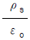
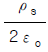
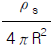
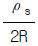
(정답률: 66%)

2. 무한장 직선도선에 흐르는 직류전류 I에 의해, 무한장 직선도선의 전류 상하에 존재하는 자침이, 그림과 같이 자침중심축을 중심으로 회전하여 정지하였다. (ㄱ) (ㄴ)(ㄷ) (ㄹ)의 극을 순서적으로 잘 배열한 것은?
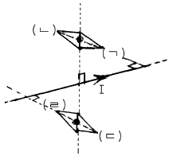
- S, N, S, N
- S, N, N, S
- N, S, N, S
- N, S, S, N
(정답률: 41%)
3. 면적 100cm2 인 두장의 금속판을 0.5cm 인 일정 간격으로 평행 배치한 후 양판간에 1000V의 전위를 인가하였을 때 단위면적당 작용하는 흡인력은 몇 N/m2 인가?
- 1.77×10-1
- 1.77×10-2
- 3.54×10-1
- 3.54×10-2
(정답률: 31%)
4. 영역 1의 자유공간에서 전파
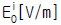
와 자파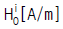
가 비유전율 εr=3을 가진 유전체 영역으로 수직하게 입사 될 때 계면에서의 값으로 틀린 것은?- 반사 전파의 크기는
 이다.
이다. - 투과 전파의 크기는
 이다.
이다. - 반사 자파의 크기는
 이다.
이다. - 투과 자파의 크기는
 이다.
이다.
(정답률: 39%)
5. Maxwell의 전자기파 방정식이 아닌 것은?
- ∮cHㆍdl=nI
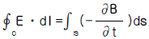
- ∮sDㆍds=fvρdv
- ∮sBㆍds=0
(정답률: 49%)
6. x ＞ 0 인 영역에서 ε1 = 3 인 유전체, x ＜ 0 인 영역에 ε2 = 5인 유전체가 있다. 유전률 ε2 인 영역에서 전계 E 2 = 20a x + 30a y - 40a z[V/m]일 때, 유전률 ε1 인 영역에서의 전계 E1 은 몇 V/m 인가?
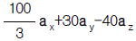
- 20a x+90a y-40a z
- 100a x+10a y-40a z
- 60a x+30a y-40a z
(정답률: 69%)
7. 쌍극자 모멘트가 M[Cㆍm]인 전기쌍극자에 의한 임의의 점 P의 전계의 크기는 전기쌍극자의 중심에서 축방향과 점 P를 잇는 선분사이의 각이 얼마일 때 최대가 되는가?
- 0
- π/2
- π/3
- π/4
(정답률: 65%)
8. 자계 중에 이것과 직각으로 놓인 도선에 I[A]의 전류를 흘리니 F[N]의 힘이 작용하였다. 이 도선을 v[m/s]의 속도로 자계와 직각으로 운동시키면 기전력은 몇 V 인가?
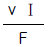
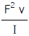
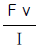
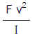
(정답률: 61%)
9. 전기회로에서 도전도(℧/m)에 대응하는 것은 자기회로에서 무엇인가?
- 자속
- 기자력
- 투자율
- 자기저항
(정답률: 66%)
10. N회 감긴 환상코일의 단면적이 S[m2]이고 평균 길이가 ℓ[m]이다. 이 코일의 권수를 반으로 줄이고 인덕턴스를 일정하게 하려고 할 때, 다음 중 옳은 것은?
- 단면적을 2배로 한다.
- 길이를 1/4 배로 한다.
- 전류의 세기를 4배로 한다.
- 비투자율을 2배로 한다.
(정답률: 71%)
11. 강자성체의 히스테리시스 루프의 면적은?
- 강자성체의 단위 체적당의 필요한 에너지이다.
- 강자성체의 단위 면적당의 필요한 에너지이다.
- 강자성체의 단위 길이당의 필요한 에너지이다.
- 강자성체의 전체 체적의 필요한 에너지이다.
(정답률: 69%)
12. 10A의 전류가 흐르고 있는 도선이 자계내에서 운동하여 5Wb의 자속을 끊었다고 하면, 이 때 전자력이 한 일은 몇 Ｊ 인가?
- 25
- 50
- 75
- 100
(정답률: 42%)
13. 8m 길이의 도선으로 만들어진 정방형 코일에 π[A]가 흐를 때 정방형의 중심점에서의 자계의 세기는 몇 A/m 인가?
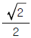
- √2
- 2√2
- 4√2
(정답률: 39%)
14. 면적 A[m2], 간격 d[m]인 평행판콘덴서의 전극판에 비유전률 εr 인 유전체를 가득히 채웠을 때 전극판간에 V[V]를 가하면 전극판을 떼어내는데 필요한 힘은 몇 N 인가?
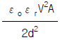
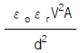
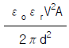
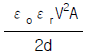
(정답률: 43%)
15. 유전률 ε=10 이고 전계의 세기가 100V/m인 유전체 내부에 축적되는 에너지 밀도는 몇 Ｊ/m3 인가?
- 2.5×104
- 5×104
- 4.5×109
- 9×109
(정답률: 54%)
16. 환상철심에 권수 NA인 A코일과 권수 NB인 B코일이 있을 때, A코일의 자기인덕턴스가 LA[H]라면 두 코일의 상호인덕턴스는 몇 H 인가?
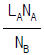
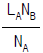
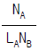
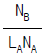
(정답률: 71%)
17. 내도체의 반지름이 a[m]이고, 외도체의 내반지름이 b[m], 외반지름이 c[m]인 동축케이블의 단위길이당 자기인덕턴스는 몇 H/m 인가?
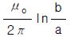
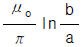
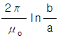
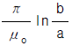
(정답률: 70%)
18. 전위함수 V=5x2y+z[V]일 때 점(2,-2,2)에서 체적전하밀도 ρ[C/m3]의 값은?
- 5εo
- 10εo
- 20εo
- 25εo
(정답률: 41%)
19. 비유전률 4, 비투자율 4인 매질내에서의 전자파의 전파속도는 자유공간에서의 빛의 속도의 몇 배인가?
- 1/3
- 1/4
- 1/9
- 1/16
(정답률: 63%)
20. 반지름 a[m], 전하 Q[C]을 가진 두 개의 물방울이 합쳐서 한개의 물방울이 되었다. 합쳐진 후의 정전에너지를 합쳐지기 전과 비교하면 어떻게 되는가?
- 변화하지 않는다.
- 2배로 감소한다.
- 1/2로 감소한다.
- 증가한다.
(정답률: 43%)
2과목: 전력공학
21. 유효낙차 100m, 최대사용수량 20m3/s인 발전소의 최대 출력은 약 몇 kW 인가? (단, 수차 및 발전기의 합성효율은 85% 라 한다.)
- 14160
- 16660
- 24990
- 33320
(정답률: 69%)
22. 가공 송전선로에서 이상전압의 내습에 대한 대책으로 틀린 것은?
- 철탑의 탑각 접지저항을 작게 한다.
- 기기 보호용으로서의 피뢰기를 설치한다.
- 가공지선을 설치한다.
- 차폐각을 크게 한다.
(정답률: 55%)
23. 차단기 절연유를 여과한 후 절연내력을 시험하였을 때 절연내력은 최소 몇 kV 이상이면 양호한 것으로 판단 하는가? (단, 절연유 시험기기는 구직경 12.5mm로 간격 2.5mm에서 내압시험을 하였을 경우이다.)
- 15
- 30
- 50
- 100
(정답률: 27%)
24. 송전 전력, 부하 역률, 송전 거리, 전력 손실 및 선간 전압이 같을 경우 3상3선식에서 전선 한 가닥에 흐르는 전류는 단상 2선식에서 전선 한 가닥에 흐르는 경우의 몇 배가 되는가?
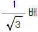
- 2/3배
- 3/4배
- 4/9배
(정답률: 39%)
25. 다음 설명 중 옳지 않은 것은?
- 저압뱅킹방식은 전압 동요를 경감할 수 있다.
- 밸런서는 단상2선식에 필요하다.
- 수용률이란 최대수용전력을 설비용량으로 나눈 값을 퍼센트로 나타낸다.
- 배전선로의 부하율이 F일 때 손실계수는 F와 F2의 사이의 값이다.
(정답률: 70%)
26. 저압 배전선로의 플리커(fliker) 전압의 억제 대책으로 볼 수 없는 것은?
- 내부 임피던스가 작은 대용량의 변압기를 선정한다.
- 배전선은 굵은 선으로 한다.
- 저압뱅킹방식 또는 네트워크방식으로 한다.
- 배전선로에 누전차단기를 설치한다.
(정답률: 44%)
27. 345kV 2회선 선로의 선로 길이가 220km 이다. 송전용량 계수법에 의하면 송전용량은 약 몇 MW 인가? (단, 345kV의 송전용량 계수는 1200 이다.)
- 525
- 650
- 1⑤0
- 1300
(정답률: 12%)
28. 역률 개선용 콘덴서를 부하와 병렬로 연결하고자 한다. △결선방식과 Y결선방식을 비교하면 콘덴서의 정전용량(단위: ㎌)의 크기는 어떠한가?
- △결선방식과 Y결선방식은 동일하다.
- Y결선방식이 △결선방식의 1/2 용량이다.
- △결선방식이 Y결선방식의 1/3 용량이다.
- Y결선방식이 △결선방식의
 용량이다.
용량이다.
(정답률: 60%)
29. 배전선의 전력손실 경감 대책이 아닌 것은?
- Feeder 수를 늘린다.
- 역률을 개선한다.
- 배전 전압을 높인다.
- Network 방식을 채택한다.
(정답률: 61%)
30. 기력발전소에서 1톤의 석탄으로 발생할 수 있는 전력량은 약 몇 kWh 인가? (단, 석탄의 발열량은 5500kcal/kg이고 발전소 효율을 33%로 한다.)
- 1860
- 2110
- 2580
- 2840
(정답률: 50%)
31. 다음 중 전력원선도에서 알 수 없는 것은?
- 전력
- 역률
- 손실
- 코로나 손실
(정답률: 71%)
32. 3상용 차단기의 정격 차단용량은?
- √3 ×정격전압×정격차단전류
- 3×정격전압×정격차단전류
- √3 ×정격전압×정격전류
- 3×정격전압×정격전류
(정답률: 73%)
33. 그림과 같이 4단자 정수가 A 1 , B 1 , C 1 , D 1 인 송전선로의 양단에 Z s , Z r 의 임피던스를 갖는 변압기가 연결된 경우의 합성 4단자정수 중 A 의 값은?
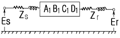
- A =C1
- A =B1+A1Zr
- A =A1+C1Zs
- A =D1+C1Zr
(정답률: 45%)
34. 중성점 직접 접지방식에 대한 설명으로 옳지 않은 것은?
- 1선 지락시 건전상의 전압은 거의 상승하지 않는다.
- 변압기의 단절연(段絶緣)이 가능하다.
- 개폐 서지의 값을 저감시킬 수 있으므로 피뢰기의 책무를 경감시키고 그 효과를 증대시킬 수 있다.
- 1선 지락전류가 적어 차단기가 처리해야 할 전류가 적다.
(정답률: 60%)
35. 비등수형 원자로의 특색에 대한 설명이 틀린 것은?
- 열교환기가 필요하다.
- 기포에 의한 자기 제어성이 있다.
- 순환펌프로서는 급수펌프뿐이므로 펌프동력이 작다.
- 방사능 때문에 증기는 완전히 기수분리를 해야 한다.
(정답률: 59%)
36. 전력용콘덴서를 변전소에 설치할 때 직렬리액터를 설치코자 한다. 직렬리액터의 용량을 결정하는 식은? (단, fo 는 전원의 기본주파수, C 는 역률개선용콘덴서의 용량, L 은 직렬리액터의 용량임)
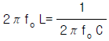
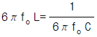
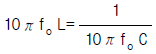
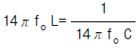
(정답률: 66%)
37. 제3조파의 단락전류가 흘러서 일반적으로 사용되지 않는 변압기 결선방식은?
- △-Y
- Y-△
- Y-Y
- △-△
(정답률: 68%)
38. 온도가 t[℃]상승했을 때의 이도는 약 몇 m 정도 되는가? (단, 온도 변화전의 이도를 D1[m], 경간을 S[m], 전선의 온도계수를 α라 한다.)
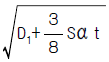
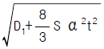
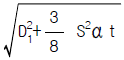
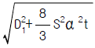
(정답률: 31%)
39. 보호계전기의 한시 특성 중 정한시에 관한 설명을 바르게 표현한 것은?
- 입력 크기에 관계없이 정해진 시간에 동작한다.
- 입력이 커질수록 정비례하여 동작한다.
- 입력 150%에서 0.2초 이내에 동작한다.
- 입력 200%에서 0.04초 이내에 동작한다.
(정답률: 76%)
40. 6.6kV 고압 배전선로(비접지 선로)에서 지락보호를 위하여 특별히 필요치 않은 것은?
- 과전류계전기(OCR)
- 선택접지계전기(SGR)
- 영상변류기(ZCT)
- 접지변압기(GPT)
(정답률: 45%)
3과목: 전기기기
41. 동기전동기에 설치한 제동권선의 역할에 해당되지 않는 것은?
- 난조방지
- 불평형 부하시의 전류와 전압 파형 개선
- 송전선의 불평형 부하시 이상전압 방지
- 단상 혹은 3상의 불평형 부하시 역상분에 의한 역회전의 전기자 반작용을 흡수하지 못함
(정답률: 53%)
42. 3상에서 2상을 얻기 위한 변압기의 결선법은 ?
- T결선
- Y결선
- V결선
- △결선
(정답률: 57%)
43. 3상 유도전동기가 있다. 슬립 S[%]일 때 2차 효율은?
- 1-S
- 2-S
- 3-S
- 4-S
(정답률: 65%)
44. 동기 발전기에서 코일 피치와 극간격의 비를 β 라 하고 상수를 m, 1극 1상당 슬롯수를 q라고 할 때 분포권 계수를 나타내는 식은?
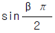
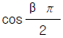
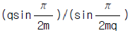
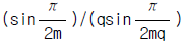
(정답률: 66%)
45. 분권 전동기가 120[V] 전원에 접속되어 운전되고 있다. 부하시에는 50[A]가 흐르고 무부하로 하면 4[A]가 흐른다 분권 계자 회로의 저항은 40[Ω], 전기자 회로의 저항은 0.1[Ω]이다. 부하 운전시의 출력은 몇[KW]인가 ? (단, 브러시의 전압강하는 2[V] 이다.)
- 약 5.2
- 약 6.4
- 약 7.1
- 약 8.7
(정답률: 30%)
46. 직류전동기의 총도체수는 80, 단중중권이며, 극수 2, 자속수 3.14[Wb]이다. 부하를 걸어 전기자에 10[A]가 흐르고 있을 때, 발생 토크[㎏ㆍm]는?
- 38.6
- 40.8
- 42.6
- 44.8
(정답률: 47%)
47. 직류 분권전동기의 단자 전압은 300[V], 정격 전기자전류 50[A], 전기자 저항은 0.⑤[Ω]이다. 기동전류를 정격전류의 1.5배로 억제하기 위한 기동저항 값[Ω]은?
- 3.95
- 4.95
- 5.95
- 6.95
(정답률: 37%)
48. 직류기의 권선을 단중파권으로 감으면?
- 내부 병렬회로수가 극수만큼 생긴다.
- 균압환을 연결해야 한다.
- 저압 대전류용 권선이다.
- 내부 병렬 회로수가 극수에 관계없이 언제나 2이다.
(정답률: 65%)
49. 다이리스터를 이용한 교류전압 제어 방식은?
- 위상제어방식
- 레오나드방식
- 쵸퍼방식
- TRC(Time Ratio Control)방식
(정답률: 54%)
50. 변압기에 있어서 부하와는 관계 없이 자속만을 발생시키는 전류는?
- 1차 전류
- 자화 전류
- 여자 전류
- 철손 전류
(정답률: 64%)
51. 단상 유도 전압 조정기의 단락 권선의 역할은?
- 철손 경감
- 전압 강하 경감
- 절연 보호
- 전압 조정 용이
(정답률: 46%)
52. 병렬운전을 하고 있는 두대의 3상 동기발전기 사이에 무효순환 전류가 흐르는 경우는?
- 여자전류의 변화
- 원동기의 출력변화
- 부하의 증가
- 부하의 감소
(정답률: 64%)
53. 정격 출력 P[KW], 역률 0.8, 효율 0.82로 운전되는 3상 유도 전동기에 2대를 V 결선으로 한 변압기로 전력을 공급할때 변압기 1대의 최소용량 [KVA]은?
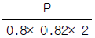
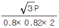
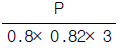
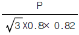
(정답률: 45%)
54. 직류 전동기의 속도 제어법이 아닌 것은?
- 계자 제어법
- 전력 제어법
- 전압 제어법
- 저항 제어법
(정답률: 67%)
55. 동기 발전기 2대로 병렬운전할 때 일치하지 않아도 되는 것은?
- 기전력의 크기
- 기전력의 위상
- 부하 전류
- 기전력의 주파수
(정답률: 66%)
56. 3상 권선형 유도전동기의 전부하 슬립이 5[%], 2차1상의 저항 1[Ω]이다. 이 전동기의 기동토크를 전부하 토크와 같도록 하려면 외부에서 2차에 삽입할 저항[Ω]은?
- 20
- 19
- 18
- 17
(정답률: 54%)
57. 동기 전동기에서 단자전압보다 진상이 되는 전류는 어떤 작용을 하는가?
- 증자작용
- 감자작용
- 교차자화작용
- 아무작용도 없다.
(정답률: 65%)
58. 브레시레스 DC 서보 모터의 특징이 아닌 것은?
- 고정자 전류와 계자가 항상 직교하고 있으므로 단위 전류당 발생 토크가 크고 역기전력에 의해 불필요한 에너지를 귀환하므로 효율이 좋다.
- 토크 맥동이 작고 전류 대 토크, 전압 대 속도의 비가 일정하므로 안정된 제어가 용이하다.
- 기계적 시간 상수가 크고 응답이 빠르다.
- 기계적 접점이 없고 신뢰성이 높으므로 보수가 불필요하다.
(정답률: 35%)
59. 손실중 변압기의 온도상승에 관계가 가장 적은 요소는?
- 철손
- 동손
- 유전체손
- 와류손
(정답률: 52%)
60. 유도 전동기의 회전력은?
- 단자 전압에 무관
- 단자 전압에 비례
- 단자 전압의 1/2승에 비례
- 단자 전압의 2승에 비례
(정답률: 48%)
4과목: 회로이론 및 제어공학
61. Δ 결선된 부하를 Y결선으로 바꾸면 소비전력은 어떻게 되는가? (단, 선간전압은 일정하다.)
- 3배
- 6배
- 1/3배
- 1/6 배
(정답률: 62%)
62. 무접점 릴레이의 장점이 아닌 것은?
- 동작속도가 빠르다.
- 온도의 변화에 강하다.
- 고빈도 사용에 견디며 수명이 길다.
- 소형이고 가볍다.
(정답률: 42%)
63. 다음 회로의 정상상태에서 저항에서 소비되는 전력[W]은? (단, R=50[Ω], L=50[H]이다)
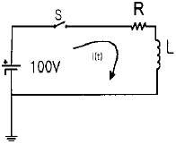
- 50
- 100
- 150
- 200
(정답률: 34%)
64. 그림과 같은 정현파 교류를 푸리에 급수로 전개할 때 직류분은?
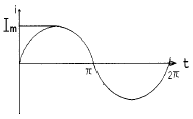
- Im
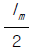
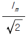
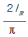
(정답률: 27%)
65. 분포정수 전송선로에 대한 서술에서 잘못된 것은?
 인 선로를 무왜형로라 한다.
인 선로를 무왜형로라 한다.- R = G = 0인 선로를 무손실회로라 한다.
- 무손실선로, 무왜형선로의 감쇠정수는
 이다.
이다. - 무손실선로, 무왜형회로에서의 위상속도는
 이다.
이다.
(정답률: 58%)
66. 그림과 같은 제어계에서 단위계단입력 D가 인가될 때 외란 D에 의한 정상편차는?
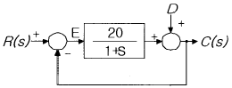
- 20
- 21
- 1/20
- 1/21
(정답률: 52%)
67. 함수 f(t)=e-2tcos3t의 라플라스 변환은?
(정답률: 56%)
68. 다음에서 Fe(t)는 우함수, Fo(t)는 기함수를 나타낸다. 주기함수 f(t)=Fe(t)+Fo(t)에 대한 다음의 서술중 바르지 못한 것은?
- Fe(t)= Fe(-t)
- Fo(t)= - Fo(-t)
(정답률: 42%)
69. 다음의 설명 중 틀린 것은?
- 최소위상 함수는 양의 위상여유이면 안정하다.
- 최소위상 함수는 위상여유가 0이면 임계안정하다.
- 최소위상 함수의 상대안정도는 위상각의 증가와 함께 작아진다.
- 이득 교차 주파수는 진폭비가 1 이 되는 주파수이다.
(정답률: 52%)
70. 어떤 제어계에서 입력신호를 가한 다음 출력신호가 정상 상태에 도달할 때까지의 응답은?
- 정상응답
- 선형응답
- 과도응답
- 시간응답
(정답률: 44%)
71. 그림과 같은 회로에서 ei를 입력, eo를 출력으로 할 경우 전달함수는?
(정답률: 52%)
72. 어떤 회로에 e(t)=Em sin ωt[V]를 가했을 때, i(t)=Im (sinωt - sin 3ωt)[A]가 흘렀다고 한다. 이 회로의 역률은?(오류 신고가 접수된 문제입니다. 반드시 정답과 해설을 확인하시기 바랍니다.)
- 0.5
- 0.75
- 0.87
- 0.92
(정답률: 29%)
73. 다음의 상태선도에서 가관측성(observability)에 대해 설명한 것 중 옳은 것은?
- x1은 관측할 수 없다.
- x2은 관측할 수 없다.
- x1 ,x2 모두 관측할 수 없다.
- 이 계통은 완전히 가관측에 있다.
(정답률: 27%)
74. 다음 그림 중 ①에 알맞는 신호 이름은?
- 기준입력
- 동작신호
- 조작량
- 제어량
(정답률: 55%)
75. 3상 △부하에서 각 선전류를 Ia Ib Ic 라 하면 전류의 영상분은? (단, 회로 평형 상태임)
- ∞
- -1
- 1
- 0
(정답률: 64%)
76. z 변환함수 에 대응되는 라플라스 변환함수는? (단, T는 이상적인 샘플러의 샘플 주기이다.)
(정답률: 47%)
77. 구동점 임피던스(driving point impedance) Z(s)에 있어서 영점(zero)은?
- 전류가 흐르지 않는 상태이다
- 회로상태와 관련없다
- 개방회로 상태를 나타낸다
- 단락회로 상태를 나타낸다
(정답률: 51%)
78. 특성방정식이 다음과 같이 주어지는 계가 있다. 이 계가 안정되기 위하여서는 K 와 T 사이의 관계는 어떻게 되는 가? (단, K와 T는 정의 실수다)
- (1+5KT)＞K
- (5KT)＞K
- (1+5KT)＜K
- (5KT)＜K
(정답률: 53%)
79. 3개의 같은 저항 R[Ω]를 그림과 같이 △결선하고, 기전력 V[V], 내부저항 r[Ω]인 전지를 n개 직렬 접속했다. 이 때 전지내를 흐르는 전류가 I[A]라면 R는 몇[Ω]인가?
(정답률: 37%)
80. 다음의 전달함수를 갖는 회로가 진상 보상회로의 특성을 가지려면 그 조건은 어떠한가?
- a＞b
- a＜b
- a＞1
- b＞1
(정답률: 42%)
5과목: 전기설비기술기준 및 판단기준
81. 특별고압 가공전선이 도로 등과 교차하여 도로 상부측에 시설될 경우에 보호망도 같이 시설하려고 한다. 보호망은 제 몇 종 접지공사로 하여야 하는가?(관련 규정 개정전 문제로 여기서는 기존 정답인 1번을 누르면 정답 처리됩니다. 자세한 내용은 해설을 참고하세요.)
- 제1종 접지공사
- 제2종 접지공사
- 제3종 접지공사
- 특별제3종 접지공사
(정답률: 44%)
82. 동일 지지물에 고ㆍ저압을 병가할 때 저압 가공전선은 어느 위치에 시설하여야 하는가?
- 고압 가공전선의 상부에 시설
- 동일 완금에 고압 가공전선과 평행되게 시설
- 고압 가공전선의 하부에 시설
- 고압 가공전선의 측면으로 평행되게 시설
(정답률: 57%)
83. 호텔 또는 여관 각 객실의 입구 등에 조명용 백열전등을 시설할 때는 몇 분 이내에 소등되는 타임 스위치를 시설하여야 하는가?
- 1
- 3
- 5
- 10
(정답률: 56%)
84. 400V가 넘는 저압 옥내배선의 사용 전선으로 단면적이 1mm2 이상의 케이블을 사용할 때 일반적인 경우, 어떤 종류의 케이블을 사용하여야 하는가?
- 폴리에틸렌 절연 비닐 시이즈케이블
- 클로로프렌 외장 케이블
- 미네럴 인슈레이션 케이블
- 부틸고무 절연 폴리에틸렌 시이즈케이블
(정답률: 41%)
85. 직류식 전기철도용 전차선로의 절연부분과 대지간의 절연저항은 가공 직류 전차선인 경우, 사용전압에 대한 누설 전류가 연장 1km 마다 몇 mA 를 넘지 아니하도록 유지하여야 하는가? (단, 강체 조가식은 제외한다.)
- 1
- 3
- 5
- 10
(정답률: 26%)
86. 특별고압 가공 전선로에 사용되는 B종 철주 중 각도형은 전선로 중 최소 몇 도를 넘는 수평각도를 이루는 곳에 사용되는가?
- 3
- 5
- 8
- 10
(정답률: 51%)
87. "제2차 접근상태"를 바르게 설명한 것은?
- 가공 전선이 전선의 절단 또는 지지물의 도괴 등이 되는 경우에 당해 전선이 다른 시설물에 접속될 우려가 있는 상태를 말한다.
- 가공 전선이 다른 시설물과 접근하는 경우에 그 가공 전선이 다른 시설물의 위쪽 또는 옆쪽에서 수평거리로 3m미만인 곳에 시설되는 상태를 말한다.
- 가공 전선이 다른 시설물과 접근하는 경우에 그 가공 전선이 다른 시설물의 위쪽 또는 옆쪽에서 수평거리로 3m이상에 시설되는 것을 말한다.
- 가공 전선로 중 제1차 접근시설로 접근할 수 없는 시설로서 제2차 보호조치나 안전시설을 하여야 접근할 수 있는 상태의 시설을 말한다.
(정답률: 49%)
88. 사용전압이 100000V이상인 전력계통에 부속하는 전력보안 통신용 전화설비의 전화 회선 중 적어도 1회선에 하여야 하는 설비에 해당되는 것은?
- 무선통신보조설비
- 전화선에 전력용 케이블을 사용하는 전화설비
- 전화선에 절연전선을 사용하는 전화설비
- 특별고압 전선에 중첩하는 전력선 반송전화설비
(정답률: 22%)
89. 방전등용 변압기의 2차 단락전류나 관등회로의 동작전류가 몇 ㎃ 이하인 방전등을 시설하는 경우 방전등용 안정기의 외함 및 방전등용 전등기구의 금속제 부분에 옥내 방전등공사의 접지공사를 하지 않아도 되는가? (단, 방전등용 안정기를 외함에 넣고 또한 그 외함과 방전등용 안정기를 넣을 방전등용 전등기구를 전기적으로 접속하지 않도록 시설한다고 한다.)
- 25
- 50
- 75
- 100
(정답률: 30%)
90. 지중에 매설되어 있고 대지와의 전기저항치가 3牆인 금속제 수도관로를 접지공사의 접지극으로 사용할 때 접지선과 수도관로의 접속은 안지름 75mm 이상인 수도관의 경우에 몇 m 이내의 부분에서 하여야 하는가?
- 3
- 5
- 8
- 10
(정답률: 22%)
91. 사용전압이 35000V이하인 특별고압 가공전선이 건조물과 제2차 접근상태로 시설되는 경우, 특별고압 가공전선로의 보안공사는?
- 고압보안공사
- 제1종 특별고압보안공사
- 제2종 특별고압보안공사
- 제3종 특별고압보안공사
(정답률: 53%)
92. 옥내에 시설하는 저압 전선으로 나전선을 사용할 수 있는 배선공사는?
- 합성수지관공사
- 금속관공사
- 버스덕트공사
- 플로어덕트공사
(정답률: 41%)
93. 정격전류가 15A를 넘고 20A 이하인 배선용차단기로 보호되는 저압 옥내전로의 콘센트는 정격전류가 몇 A 이하인 것을 사용하여야 하는가?
- 15
- 20
- 30
- 50
(정답률: 39%)
94. 옥내에 시설하는 저압 전선으로 나전선을 사용해서는 안되는 경우는?
- 금속덕트공사에 의한 전선
- 버스덕트공사에 의한 전선
- 이동 기중기에 사용되는 접촉전선
- 전개된 곳의 애자사용공사에 의한 전기로용 전선
(정답률: 40%)
95. 수력발전소의 발전기 내부에 고장이 발생하였을 때 자동적으로 전로로부터 차단하는 장치를 시설하여야 하는 발전기 용량은 몇 kVA 이상인 것인가?
- 3000
- 5000
- 8000
- 10000
(정답률: 57%)
96. 고ㆍ저압 혼촉시의 위험을 방지하기 위하여 혼촉방지판이 있는 변압기를 설치할 때 이 혼촉방지판에는 일반적으로 제 몇 종 접지공사를 하는가?(관련 규정 개정전 문제로 여기서는 기존 정답인 2번을 누르면 정답 처리됩니다. 자세한 내용은 해설을 참고하세요.)
- 제1종
- 제2종
- 제3종
- 특별제3종
(정답률: 42%)
97. 고압 및 특별고압 가공 전선로로부터 공급을 받는 수용 장소의 인입구에 반드시 시설하여야 하는 것은?
- 댐퍼
- 아킹혼
- 조상기
- 피뢰기
(정답률: 45%)
98. 설계하중 900kg인 철근콘크리트주의 길이가 16m라 한다. 이 지지물을 안전률을 고려하지 않고 시설하려고 하면, 땅에 묻히는 깊이는 몇 m 이상으로 하여야 하는가?
- 2. 0
- 2.3
- 2.5
- 2.8
(정답률: 41%)
99. 사용 전압이 154kV인 가공 송전선의 시설에서 전선과 식물과의 이격거리는 몇 m 이상으로 하여야 하는가?
- 2.8
- 3.2
- 3.6
- 4.2
(정답률: 44%)
100. 저ㆍ고압 가공 전선과 가공 약전류전선 등을 동일 지지물에 시설하는 경우로서 옳지 않은 방법은?
- 가공 전선을 가공 약전류전선 등의 위로하고 별개의 완금류에 시설할 것
- 전선로의 지지물로 사용하는 목주의 풍압하중에 대한 안전율은 1.5 이상일 것
- 가공 전선과 가공 약전류전선 등 사이의 이격거리는 저압과 고압이 모두 75cm 이상일 것
- 가공 전선이 가공 약전류전선에 대하여 유도작용에 의한 통신상의 장해를 줄 우려가 있는 경우에는 가공 전선을 적당한 거리에서 연가할 것
(정답률: 56%)
E = ρs / 2ε₀
여기서, ε₀는 자유공간의 유전율이다.
따라서, 정답은 "" 이다.
이유는, 전계의 세기는 면전하밀도와 자유공간의 유전율에 비례하기 때문이다. 또한, 도체판에서 떨어져 있는 거리와는 무관하다는 것도 알 수 있다.